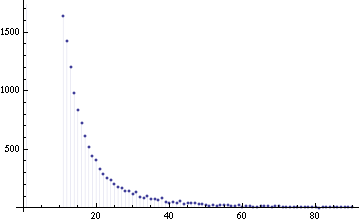
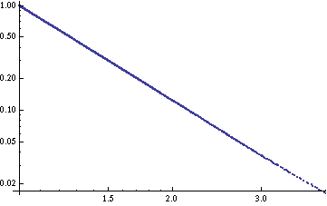
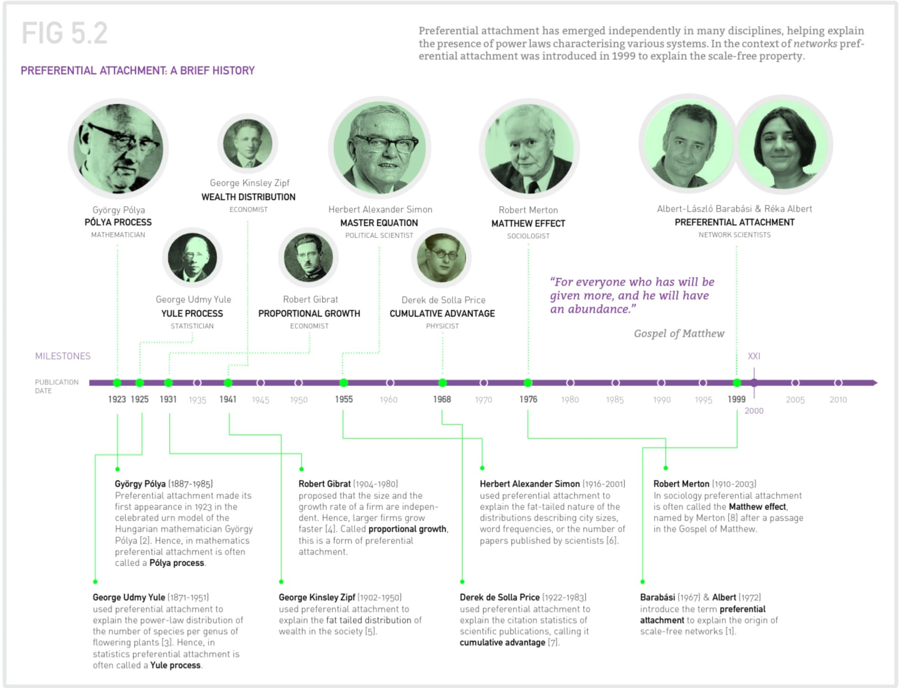
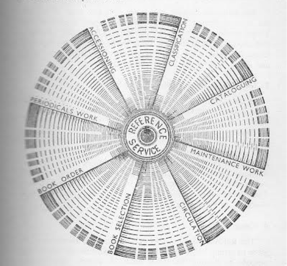

<!doctype html>
<html lang="en">

	<head>
		<meta charset="utf-8">

		<title>Le biblioteche e la filiera dell’open</title>

		<meta name="description" content="Beni comuni digitali">
		<meta name="author" content="Andrea Zanni">

		<meta name="apple-mobile-web-app-capable" content="yes" />
		<meta name="apple-mobile-web-app-status-bar-style" content="black-translucent" />

		<meta name="viewport" content="width=device-width, initial-scale=1.0, maximum-scale=1.0, user-scalable=no">

		<link rel="stylesheet" href="reveal.js/css/reveal.css">
		<link rel="stylesheet" href="reveal.js/css/theme/black.css" id="theme">

		<!-- For syntax highlighting -->
		<link rel="stylesheet" href="reveal.js/lib/css/zenburn.css">

		<!-- If the query includes 'print-pdf', use the PDF print sheet -->
		<script>
			document.write( '<link rel="stylesheet" href="reveal.js/css/print/' + ( window.location.search.match( /print-pdf/gi ) ? 'pdf' : 'paper' ) + '.css" type="text/css" media="print">' );
		</script>

		<!--[if lt IE 9]>
		<script src="reveal.js/lib/js/html5shiv.js"></script>
		<![endif]-->
	</head>

	<body>

		<div class="reveal">

            <div class="slides">

                
<section data-markdown data-separator="^\n---\n$" data-separator-vertical="^\n--\n$" data-notes="^Note:">
<script type="text/template">

<!-- .slide: data-background="#bb0000" -->

##Le biblioteche e la filiera dell’open

[Andrea Zanni](http://aubreymcfato.com)

[@aubreymcfato](http://twitter.com/aubreymcfato)


**Winter School Biblioteconomica 2021**

---

<!-- .slide: data-background="#bb0000" -->

Negli anni '70 il sociologo Robert K. Merton, studiando le comunità scientifiche, scopre il meccanismo per cui, più uno scienziato è famoso, più facilmente a lui verranno accreditati risultati scientifici. Lo chiama «effetto Matteo».

--

<!-- .slide: data-background="#bb0000" -->

>A chi ha sarà dato e sarà nell'abbondanza.
(Mt 13, 12)

--

<!-- .slide: data-background="#bb0000" -->

>“la cumulatività del processo di riconoscimento del credito scientifico, per cui uno scienziato a cui vengono riconosciuti risultati originali all’inizio della carriera riceve precocemente finanziamenti, che porteranno ad ulteriori scoperte, a nuovi riconoscimenti e a
finanziamenti aggiuntivi”
(cfr. Andrea Bonaccorsi 2015. _La valutazione possibile_. Bologna: Il Mulino, 29, cit. da Turbanti 2017).

--

<!-- .slide: data-background="#bb0000" -->

Questo tipo di _feedack positivo_, è presente in molte altre forme. 

+ un articolo molto citato sarà sempre più citato, 
+ un autore molto citato sarà sempre più citato, 
+ una rivista molto citata sarà sempre più citata... 

--

<!-- .slide: data-background="#bb0000" -->

C'è una sorta di _connessione preferenziale_. 

--

<!-- .slide: data-background="#bb0000" -->

Questi meccanismi governano il mondo della scienza e della comunicazione scientifica. 
Eugene Garfield fu tra i primi a pensare che una biblioteca poteva comprare solo il 20% di tutte le riviste, se avesse saputo qual'era il 20% "giusto"...
Fu l'inizio della _bibliometria_.

--

<!-- .slide: data-background="#bb0000" -->

Ma non solo la letteratura scientifica funziona così.
Anche la distribuzione della ricchezza, la popolazione delle città, ecc.

--

<!-- .slide: data-background="#bb0000" -->

###Principio di Pareto
_Il 20% delle cause provoca l'80% degli effetti_

--

<!-- .slide: data-background="#bb0000" -->

Se creaiamo dei grafici con gli insiemi di dati governati da queste "leggi empiriche", generiamo un determinato tipo di curve esponenziali, chiamate _leggi di potenza_ (_power laws_ in inglese).

--

<!-- .slide: data-background="#FFFFFF" -->

</img>
Power law con esponente 3.

--

<!-- .slide: data-background="#FFFFFF" -->

</img>
Power-law con esponente 3 in grafico logaritmico.

--

<!-- .slide: data-background="#FFFFFF" -->

</img>

Albert-László Barabási _[Network science](https://barabasi.com/f/622.pdf?mod=article_inline)_

--

<!-- .slide: data-background="#bb0000" -->

Se interpretiamo il web come un "grafo citazionale", ci accorgiamo che anch'esso è governato da una power law,
per cui esistono alcuni _hub_ con miliardi di collegamenti e milioni e milioni di siti con pochissimi collegamenti. 

--

<!-- .slide: data-background="#bb0000" -->

Wikipedia è uno di questi _hub_. 
Uno dei quindici siti più visitati al mondo.

--

<!-- .slide: data-background="#bb0000" -->

24 miliardi di _pageviews_ a gennaio per tutti i siti Wikimedia.
270 miliardi negli ultimi 12 mesi.

800 milioni di pageviews per la Wikipedia in italiano a gennaio, 
8 miliardi negli ultimi 12 mesi.
54 milioni di devices connessi al mese.

---

<!-- .slide: data-background="#822222" -->

##Beni comuni digitali

--

<!-- .slide: data-background="#822222" -->
Da sempre, economisti e politici si interrogano sulla gestione delle risorse naturali all'interno della società.
<!-- per questo, ci siamo inventati due modalità principali per gestirle...-->

--

<!-- .slide: data-background="#822222" -->
lo Stato e il Mercato, il pubblico e il privato. 

--

<!-- .slide: data-background="#822222" -->
C'è una terza via: i _commons_, i beni comuni. 

--

<!-- .slide: data-background="#822222" -->
_La tragedia dei beni comuni_.

(Garrett Harding, 1968)

--

<!-- .slide: data-background="#822222" -->
_Free riding_, inquinamento, competizione per l'uso, sfruttamento eccessivo:
alcuni attori possono rovinare il bene comune, a danno di tutti. 

--

<!-- .slide: data-background="#822222" -->

Secondo Elinor Ostrom, il bene comune è definito da:

+ Confini chiaramente definiti (chiara definizione dei contenuti del bene comune ed effettiva esclusione di attori esterni che non hanno diritto a parteciparne) 
+ Regole che riguardano l’appropriazione e l'offerta delle risorse comuni
+ Modalità di scelta collettiva che permettono alla maggior parte dei membri di partecipare al processo decisionale
+ Monitoraggio effettivo da parte dei membri (o da persone che ai membri devono rendere conto)

--

<!-- .slide: data-background="#822222" -->

+ Uno spettro di sanzioni progressive per chi viola le regole della comunità
+ Meccanismi di risoluzione dei conflitti che siano poco costose e di facile accesso
+ Autodeterminazione della comunità riconosciuta dalle autorità di alto livello
+ In caso di beni comuni più grandi, l’organizzazione è nella forma di livelli multipli di imprese annidate, con beni comuni più piccoli al livello base

---

<!-- .slide: data-background="#0A2A34" -->
da risorse scarse a risorse abbondanti: i _beni comuni digitali_.

--

<!-- .slide: data-background="#0A2A34" -->
Gli atomi sono pesanti e costosi da spostare. 
Inoltre sono _unici_.

--

<!-- .slide: data-background="#0A2A34" -->
Gli atomi sono sottraibili/rivali: se tu hai una mela e io te la prendo, 
io ho una mela e tu no.

--

<!-- .slide: data-background="#0A2A34" -->
La rivalità è uno degli aspetti fondamentali della realtà.

--

<!-- .slide: data-background="#0A2A34" -->
Ma non di quella digitale: i bit non sono _rivali_.  

--

<!-- .slide: data-background="#0A2A34" -->
I bit hanno il _teletrasporto_ e la _copia infinita_. 

--

<!-- .slide: data-background="#0A2A34" -->
La rete crea una nuova _fisica_.

--

<!-- .slide: data-background="#0A2A34" -->
bit = informazione = conoscenza

--

<!-- .slide: data-background="#0A2A34" -->
>Se tu hai una mela, ed io ho una mela, e ce le scambiamo, allora tu ed io abbiamo sempre una mela per uno.
Ma se tu hai un’idea, ed io ho un’idea, e ce le scambiamo, allora abbiamo entrambi due idee.


(George Bernard Shaw)

---

<!-- .slide: data-background="#03004d" -->

By design, il web è perfetto per _condividere bit_, cioè informazione.
È perfetto per comunicare, è perfetto per collaborare. 
È un'arma di collaborazione di massa. 

--

<!-- .slide: data-background="#03004d" -->

Non c'è bene comune digitale senza comunità.

--

<!-- .slide: data-background="#03004d" -->

+ Linux
+ [Wikipedia](http//it.wikipedia.org)
+ [Wikisource](http//it.wikisource.org)
+ [Wikidata](http//wikidata.org)
+ [Zooniverse](http://zooniverse.org)
+ [StackOverflow](https://stackoverflow.com/)
+ [OpenStreetMap](http://www.openstreetmap.org/)
+ letteratura scientifica ad accesso aperto

---

<!-- .slide: data-background="#1d9608" -->

I progetti Wikimedia, negli anni, hanno espresso una governance complessa, 
composta di associazioni no profit, fondazioni, comunità online. 
<!-- fare qualche esempio: WMF paga elettricità, manutenzione, sviluppo software, e finanzia le associazioni nazionali; le associazioni lavorano con le istituzioni (scuole, università, biblioteche, musei); le comunità online gestiscono i progetti online -->

--

<!-- .slide: data-background="#1d9608" -->
Ibridazione fra pubblico e privato, online e offline,
_top-down_ e _bottom-up_.

--

<!-- .slide: data-background="#1d9608" -->
Licenze libere, procedure e formati aperti, codice aperto. 

--

<!-- .slide: data-background="#1d9608" -->
All'interno delle regole della comunità, non c'è più _rivalità_, ma il contrario: 
più ci sono partecipanti al bene comune, meglio è. 

--

<!-- .slide: data-background="#1d9608" -->
Se c'è una cosa che nel web funziona, pur con tutti i problemi, sono proprio, i beni comuni digitali. 

--

<!-- .slide: data-background="#1d9608" -->

L'universo Wikimedia è l'unico _hub_ in cui le biblioteche possono partecipare, in modo da venire incontro ai loro utenti.

---

<!-- .slide: data-background="#006633" -->

Ogni professionista che lavori nell’ambito dell’"accesso all’informazione" – educatori, insegnanti, professori universitari, bibliotecari,  curatori museali, archivisti, ma anche medici e informatori sanitari – ha iniziato a interessarsi a Wikipedia con un approccio orientato 
all’impatto (_impact-driven_)

--

<!-- .slide: data-background="#006633" -->

_dato che Wikipedia è uno dei siti più visitati al mondo, è importante che le sue informazioni siano il più accurate possibile._

--

<!-- .slide: data-background="#006633" -->

Durante l'epidemia di Ebola che ha colpito la costa occidentale dell’Africa nel 2014, alcuni team di esperti si organizzarono per migliorare e verificare le pagine nella Wikipedia inglese relative al virus, dai metodi di contagio a quelli di prevenzione. 

--

<!-- .slide: data-background="#006633" -->

Dopo questa prima fase di validazione e miglioramento, in collaborazione con la no profit _Translators without borders_, le voci furono tradotte in oltre 100 lingue, specialmente nella prima e più violenta fase dell’epidemia. 

--

<!-- .slide: data-background="#006633" -->

Analisi successive hanno mostrato che queste stesse voci siano state visualizzate oltre 89 milioni di volte nel solo 2014, e che siano state la risorsa informativa online sul virus più utilizzata in quattro delle regioni più colpite.

--

<!-- .slide: data-background="#006633" -->

La comunità medica, che comprende nella propria deontologia principi come _emergenza_ e _prevenzione_, abbia in parte compreso che Wikipedia sia un alleato fondamentale per una corretta informazione sanitaria. 

--

<!-- .slide: data-background="#006633" -->

_dato che Wikipedia è uno dei siti più visitati al mondo, è importante che le sue informazioni siano il più accurate possibile._


---

<!-- .slide: data-background="#87CEEB" -->

In ambito bibliotecario, questo tipo di approccio "orientato all’impatto" può essere fatto discendere direttamente da S.R. Ranganathan,

--

<!-- .slide: data-background="#87CEEB" -->

**Le cinque leggi della biblioteconomia**

1. I libri sono fatti per essere usati
2. A ogni lettore il suo libro
3. A ogni libro il suo lettore
4. Risparmia il tempo del lettore 
5. La biblioteca è un organismo che cresce

--

<!-- .slide: data-background="#87CEEB" -->

concezione olistica che integra la tradizione mistica indiana, l’interesse per l’insegnamento, la pedagogia, la matematica.

--

<!-- .slide: data-background="#87CEEB" -->

il bibliotecario deve _facilitare_ l’apprendimento del lettore, rispondendo ad un bisogno informativo. 

--

<!-- .slide: data-background="#87CEEB" -->

le cinque leggi definiscono il lavoro bibliotecario come raggi di una ruota, e tutto gira attorno al perno centrale, che secondo Ranganathan è proprio il servizio di reference, personalizzato su ogni lettore, e da lui definito “il vero lavoro del bibliotecario” 

--

<!-- .slide: data-background="#FFFFFF" -->

</img>

--

<!-- .slide: data-background="#87CEEB" -->

Secondo Ranganathan, i documenti contengono i _macro_ e _micropensieri_ di cui il lettore necessita in un preciso momento della sua vita, e compito del bibliotecario è aiutare a trovarli. 

--

<!-- .slide: data-background="#87CEEB" -->

l’informazione è da mettere in relazione con l’essere umano che, per ragioni personali o professionali, la cerca.

--

<!-- .slide: data-background="#87CEEB" -->

Le prime tre mettono in _corrispondenza biunivoca_: il lettore con ciò che sta cercando.

La quarta ne fa una questione di efficienza e velocità. 

La quinta amplia e sottolinea la dinamicità intrinseca nel concetto di biblioteca, il suo crescere insieme ai propri tempi, alla tecnologia, alle esigenze dei propri lettori.

--

<!-- .slide: data-background="#87CEEB" -->

1. Le biblioteche servono l’umanità.
2. Rispetta tutte le forme nelle quali la conoscenza è comunicata.
3. Usa la tecnologia con intelligenza per migliorare il servizio.
4. Proteggi l’accesso libero alla conoscenza.
5. Onora il passato e crea il futuro.
(Michael Gorman)

--

<!-- .slide: data-background="#87CEEB" -->

1. Le biblioteche sono magazzini dell’informazione
2. Le biblioteche assistono le persone per trasformare l’informazione in conoscenza
3. Le biblioteche dovrebbero rendere l’informazione accessibile a tutti
4. Tutti sono potenziali utenti delle biblioteche che devono essere serviti da mezzi appropriati alla loro situazione e ai loro bisogni.
5. Devono essere sfruttati tutti i mezzi di conservazione e comunicazione dell’informazione che siano appropriati
(Maurice Line)

--

<!-- .slide: data-background="#87CEEB" -->

_apertura, trasparenza,libertà di ricerca, accesso all’informazione e alla conoscenza_

--

<!-- .slide: data-background="#87CEEB" -->

>La libertà, il benessere e lo sviluppo della società e degli individui sono valori umani fondamentali. Essi potranno essere raggiunti solo attraverso la capacità di cittadini ben informati di esercitare i loro diritti democratici e di giocare un ruolo attivo nella società. La partecipazione costruttiva e lo sviluppo della democrazia dipendono da un’istruzione soddisfacente, così come da un accesso libero e senza limitazioni alla conoscenza, al pensiero, alla cultura e all’informazione
(Manifesto  IFLA/UNESCO  delle  biblioteche  pubbliche, 1994)

--

<!-- .slide: data-background="#87CEEB" -->

>Immagina un mondo in cui ogni persona possa avere libero accesso all’intero patrimonio della conoscenza umana. Questo è il nostro scopo.
(Wikimedia Foundation)

---

<!-- .slide: data-background="#000080" -->

##La filiera dell'open

--

<!-- .slide: data-background="#000080" -->

Non esiste un procedimento standard, uguale per ogni collezione, ogni tipologia di materiale, 
ogni istituzione. 

--

<!-- .slide: data-background="#000080" -->

Il focus è la _filiera_: dobbiamo pensare al progetto di condivisione della sua globalità, analizzando tutti i passaggi e seguendo il dato open ad ogni livello.

--

<!-- .slide: data-background="#000080" -->

Una biblioteca pubblica possiede alcune digitalizzazioni di un fondo locale: si tratta di libri in pubblico dominio, di cui la biblioteca può disporre a piacimento. Scansioni realizzate in passato grazie alla donazione di privati o tramite un bando, ma il progetto è concluso. 
Le immagini non sono online. Nessuno in biblioteca ha le competenze per garantire la preservazione digitale.

--

<!-- .slide: data-background="#000080" -->

###Internet Archive

--

<!-- .slide: data-background="#000080" -->

Vantaggi:

+ visibilità alla collezione 
+ motore di ricerca, anche in full-text, basato sull’OCR
+ preservazione digitale
+ servizi aggiuntivi e gratuiti (OCR, PDF, visualizzatore dedicato, mobile-friendly, versioni accessibili (Daisy), ecc.)
+ interfaccia API, utilizzabile da sviluppatori e servizi web.

--

<!-- .slide: data-background="#000080" -->

_infrastruttura_ open, accessibile e condivisa

--

<!-- .slide: data-background="#000080" -->

###Wikisource

--

<!-- .slide: data-background="#000080" -->

Vantaggi:

+ la trascrizione e rilettura collettiva del testo
+ la possibilità di visualizzare il testo trascritto con la scansione a fianco
+ "edizione digitale" del documento
+ l’integrazione con gli altri progetti Wikimedia (Wikipedia, Wikidata, ecc.)
+ la possibilità di favorire l’_ipertestualità_ e inserire, all’interno della trascrizione del documento, link ad altri autori o testi.

--

<!-- .slide: data-background="#000080" -->

biblioteca > Internet Archive > Wikisource > MLOL > biblioteca

--

<!-- .slide: data-background="#000080" -->

cerchio è dunque chiuso, la filiera completa: 
siamo partiti da risorse digitali isolate, su un computer.

--

<!-- .slide: data-background="#000080" -->

si è arrivati ad avere non solo queste stesse risorse

+ disponibili online per tutti
+ in siti molto visitati
+ risorse arricchite 
+ preservate digitalmente
+ "scomposte" nei loro dati e compontenti, che rimangono disponibili per un riuso più granulare in altri progetti dedicati (come Wikipedia, Wikidata, OpenStreetMap, ...)

--

<!-- .slide: data-background="#000080" -->

ognuna di queste azioni è _gratis_.

nessuna di queste azioni è _senza costi_.

--

<!-- .slide: data-background="#000080" -->

ogni biblioteca può scegliere il proprio percorso, decidendo cosa condividere e in che forma.

i progetti più di successo sono quelli in cui l'approccio _open_ diventa parte della cultura istituzionale. 


--

<!-- .slide: data-background="#000080" -->

_library as a platform_


---

<!-- .slide: data-background="#1d9608" -->
##Grazie

--

<!-- .slide: data-background="#1d9608" -->

Articolo originale: 
###Andrea Zanni, _[Le biblioteche e la filiera dell'open](https://www.jlis.it/article/view/12486/11336)_, JLIS, 2018.

--

<!-- .slide: data-background="#1d9608" -->

Slides:
###aubreymcfato.github.io/slides/open


</script>
</section>


            </div>

		</div>

		<script src="reveal.js/lib/js/head.min.js"></script>
		<script src="reveal.js/js/reveal.js"></script>

		<script>

			// Full list of configuration options available here:
			// https://github.com/hakimel/reveal.js#configuration
			Reveal.initialize({
				controls: true,
				progress: true,
				history: true,
				center: true,

				theme: Reveal.getQueryHash().theme, // available themes are in /css/theme
				transition: 'default', // default/cube/page/concave/zoom/linear/fade/none

                

				// Optional libraries used to extend on reveal.js
				dependencies: [
					{ src: 'reveal.js/lib/js/classList.js', condition: function() { return !document.body.classList; } },
					{ src: 'reveal.js/plugin/markdown/marked.js', condition: function() { return !!document.querySelector( '[data-markdown]' ); } },
					{ src: 'reveal.js/plugin/markdown/markdown.js', condition: function() { return !!document.querySelector( '[data-markdown]' ); } },
					{ src: 'reveal.js/plugin/highlight/highlight.js', async: true, callback: function() { hljs.initHighlightingOnLoad(); } },
					{ src: 'reveal.js/plugin/zoom-js/zoom.js', async: true, condition: function() { return !!document.body.classList; } },
                    
					{ src: 'reveal.js/plugin/notes/notes.js', async: true, condition: function() { return !!document.body.classList; } }
                    
                    
				]
			});

		</script>

	</body>
</html>
